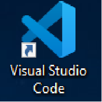
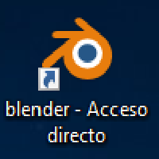
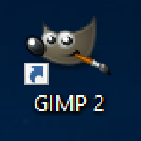
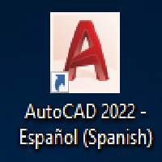

Visual Studio |
Visual Studio es mas que un editor de codigo. Es un entorno de desarrollo integrado con numerosas caracteristicas que dan respaldo a muchos aspectos del desarrollo de software
|
Blender |
Es una suite de creacion de contenido 3D totalmente integrada que ofrece una amplia gama de herramientas esenciales, que incluyen modelado, renderizado, animación, rigging y muchos tipos de simulaciones.
|
Gimp |
Es un programa de edicion de imagenes digitales en forma de mapa de bits, tanto de dibujos como de fotografias, es un programa libre y gratuito.
|
AutoCad 2022 |
Es un software de diseño asistidio por computadora que se utiliza para dibujar, diseñar y modelar en 3D y 2D de forma precisa con solidos, superficies, objetos de malla, caracteristicas dedocumentacion.
|